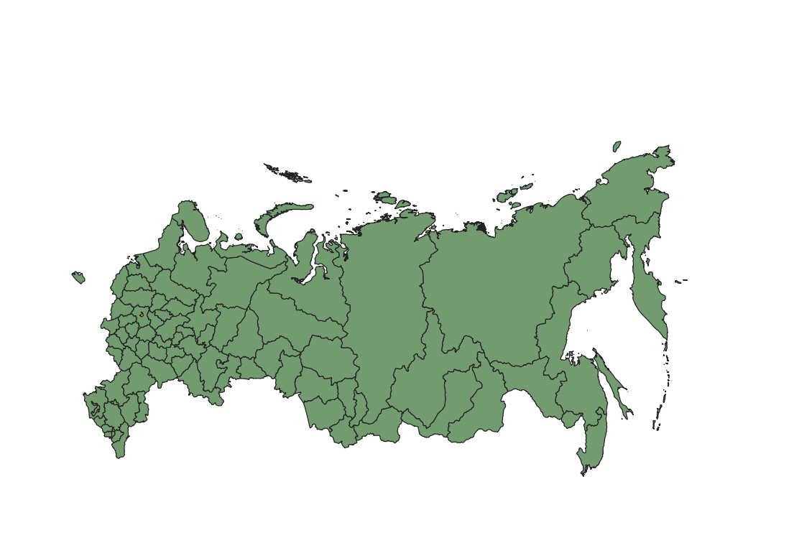
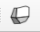

10 Создание различных типов карт в QGIS
10.1 Исходные данные
В качестве исходных данных взяты границы регионов РФ с сайта https://www.diva-gis.org/gdata.
Исходный слой был перепроецирован в систему координат Asia North Albers Equal Area Conic ESRI:102025 для минимизации искажений на карте. Также дополнительно были выполнены преобразования для того, чтобы Чукотка стала единым объектом.
В атрибутивную таблицу добавлены колонки с площадью субъектов и количеством населения (данные о населении по состоянию на 1 января 2021 года, Росстат).
Полученный слой можно скачать здесь.
После открытия слоя в QGIS и перепроецирования на лету в систему координат Asia North Albers Equal Area Conic ESRI:102025 (см. 3.1 и 3.3) он будет выглядет так

10.2 Пропорциональные символы (bubble map)
Как уже обуждалось ранее, один из самых простых способов показать числовые значения - символы, размер которых пропорционален величине отображаемых значений.
10.2.1 Способ 1 (через дополнительный слой знака)
Для того, чтобы создать такую карту нужно открыть свойства слоя (либо двойным кликом на название слоя, либо из контекстного меню Свойства).

Окно свойств слоя
В настоящий момент для слоя задана обычная заливка, которую нам нужно заменить на символы с настраиваемым размером. Для этого нужно нажать на 
После чего появится еще одна заливка в свойствах слоя.

Одну из этих заливок мы заменим на символы. Чтобы это сделать, нужно выбрать тип слоя Centroid fill.
Отметим, что нам нужно рамещать маркеры внутри полигона, но не нужно рисовать их на каждой части мультиполигона.
Далее проведем настройку непосредственно маркера. Чтобы открыть эти настройки, нужно щелкнуть на слова Simple marker.

Каждый символ может состоят из нескольких слоев символов Symbol layers.23 Дерево символов показывает все эти слои и как они расположены относительно друг друга. Такие слои формируют новый комбинированный символ. Также здесь автоматически пересчитываются динамические показатели символов после изменения признаков.
Основные инструменты для управления деревом символов:
 добавление нового слоя символа (можно добавлять сколько угодно слоев); t
добавление нового слоя символа (можно добавлять сколько угодно слоев); t удаление слоя;
удаление слоя;блокировка цветов слоя символа
 (заблокированные слои не меняются, даже если пользователь меняет настройки цвета глобально или на более высоком уровне иерархии);
(заблокированные слои не меняются, даже если пользователь меняет настройки цвета глобально или на более высоком уровне иерархии); дублировать слой символа или группу слоев;
дублировать слой символа или группу слоев;свиг вверх или вниз по иерархии.
Мы хотим установить размер символа, чтобы он отражал число населения в регионе. Для этого напротив графы размер нужно нажать на кнопку и выбрать поле, по которому будет задаваться размер.

Чтобы карта была более читаема заливку в этом слое либо совсем убрать (как показано на картинке), либо сделать нейтральной и полупрозрачной.
Полученная карта

На карте видно, что в европейской части страны многие символы перекрывают друг друга, а в восточной Сибири и на Дальнем Востоке наборот символы очень малы.
Можно осуществить дальнейшую настройку символов, например, попробовать изменить размер, заменить цвет на более нейтральный и сделать символы полупрозрачными, чтобы можно было их различить при перекрывании точек.

10.2.2 Способ 2 (через круговую диаграмму)
Также градуированные символы можно задать с использованием круговых диграмм.
Для этого нужно открыть свойства слоя на вкладке Диаграммы и выбрать тип круговую диаграмму (Pie chart), после чего задать переменную, по которой будут отрисовываться символы.

Далее настроим размер в зависимоти от величины населения.
Результат получается аналогичный результату в первом способе, но строится и загружается такая карта значительно медленнее.

10.3 Картограмма (choropleth)
Так как данные в нашем случае представлены в виде полигонов, очевидный способ отображения - это картограмма.
Самый простой способ создания картограммы - открыть настройки стиля, выбрать тип символа Градуированный знак, поле, по значениям которого будет задаваться цвет полигонов и классифицировать значения.

В результате получим подобную карту.

Мы можем далее подкорректировать интервалы, подобрать градиент и прочие дополнительные настройки.

Но, как уже говорилось на прошлых занятиях, на подобных картах не рекомендуют использовать абсолютные значения, а нормализовывать их. В нашем случае карта как раз была построена по количеству населения, хотя предпочтительнее здесь будет отображать плотность населения.
Значение плотности населения мы можем рассчитать с помощью калькулятора полей и записать в новый столбец, а потом создать карту по этому новому показателю. Или же мы можем записать выражение прямо в настройках стиля нашего слоя.

Так как количество населения у нас было дано в миллионах человек, сначала это значение было домножено на 1 000 000, а потом поделено на значение площади в километрах квадратных. Таким образом мы получим плотность населения на 1 километр квадратный.
Соответственно у нас пересчитаются классы на основе новых значений.
На полученной карте видно, что классификация в нашем случае подобрана не удачно: много близких значений, поэтому большинство объектов раскрашены одним цветом.
Плотность населения, чел/км кв (естественные интервалы)
Возможно в данном случае более подходящим методом классификации будут квантили (результат показан на картинке ниже) или ручное задание интервалов.
Плотность населения, чел/км кв (квантили)
Для акцентирования внимания на границах и различиях между регионами можно выбрать тип символа Shapeburst fill. Этот тип символа создает градиент от границ полигонов к их центру.
10.4 Карта плотности точек (dot density)
Карту плотности точек как и карту пропорциональных символов можно создать комбинацией слоев символов внутри настроек стиля.
Для этого к обычной заливке Simple fill нужно добавить дополнительный слой Random marker fill.

Количество точек в нашем случае нужно задать выражением.

Сделаем так, чтобы 1 точка была равно 100 000 человек. Количество населения в атрибутивной таблице было задано в миллионах, поэтому наши значения нужно просто умножить на 10.

Сразу же скорректируем размер маркера и цвет.
Полученная карта

Карта плотности населения (1 точка - 100 000 человек)
Важно помнить, что точки расставлены внутри полигонов случайным образом, то есть они не отображают реальное расположение населения.
10.5 Анаморфная карта (cartogram)
В QGIS нет встроенного метода создания анаморфных карт, но это можно сделать с помощью плагина Cartogram. Как устанавливать плагины рассказано в 3.2.

После установки плагина на панели инструментов должен появиться значок 
В диалоговом окне создания анаморфной карты нужно указать:
для какого слоя она создается;
по какому показателю;
критерии остановки - количество итераций и максимальная ошибка (расчет прекращается, когда выполнено одно из условий).


Анаморфная карта по числу населения
10.6 Карта с одновременным отображением двух переменных (bivariate map)
Построим карту, которая одновременно будет показывать величину субъектов (их площадь) и количество населения.
В этом разделе воспользуемся вот этим туториалом для QGIS, но есть и другие способы, например, от Джошуа Стивенса.
Продублируем слой с субъектами РФ: один из них будет показывать население, другой - площадь. Впоследствии мы их наложим друг на друга, чтобы получить результирующую карту.
Настроим стиль слоя с населением. Здесь нам нужно задать 3 равных интервала с градиентом одного цвета.

Далее настроим стиль слоя с площадью аналогично предыдущему, но с градиентом другого цвета.
Далее для того слоя, который находится сверху ( в моем случае это слой со значениями площади) нужно изменить настройку режима смешивания.

В результате получим карту, показывающую одновременно две переменные.
Но подобные карты не понятны без легенды, поэтому создадим легенду карты с помощью плагина Bivariate legend (как установливать плагины рассказано в 3.2).

Далее запустим плагин и создадим легенду нашей карты.

Созданная легенда экспортируется в виде картинки, которую мы можем добавить на макет карты для печати или публикации (про создание макетов см. 3.4)

Легенда карты
Оформим карту на макете.

Полный проект с описанными типами отображения данных и настройками можно скачать здесь